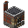

The cottageThe bread oven
Feed it wood or coal, and dough to bake.
It bakes once it's hot, and its hotplate heats a pot or pan. Look inside with an empty hand.
Baking
Fresh from the oven: +1 hunger for a day.
Cupboards
Base and wall cupboards hold 27 things each. Base cupboards make a worktop.
Set things on the dresser's shelves.
More cupboards
The larder
A cool cupboard: bakes kept in it stay fresh.
Bake on a Sunday, eat all week.
The drying rack
Hang it under a ceiling. Herbs and chillies dry in half a day.
Dried herbs make two teas; in a pot they season it.
The butter churn
Pour in milk, then churn a dozen times by hand.
Take it with a bottle to keep the buttermilk.
The table
Set food on it. An empty hand eats a helping.
A sit-down meal fills you up more.
The rocking chair
Sit and rock. By a fire you warm through and mend.
Crouch to get up.
A pot of tea
Water and one herb, on the heat: four cups.
Pour with glass bottles.
The cheese press
Two buckets of milk, four turns, a quarter day.
Cut a cheese into four wedges.
The spinning wheel
Dress it with wool, then treadle eight times.
One fleece spins three string.
The longcase clock
It chimes and strikes the hours. Ask it the time.
It knows the season and the day too.
Rag rugs
Braided from wool and string, for any floor.